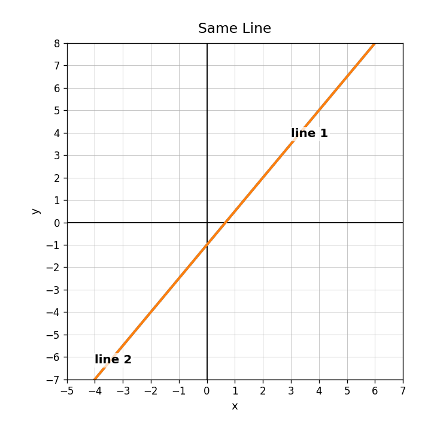
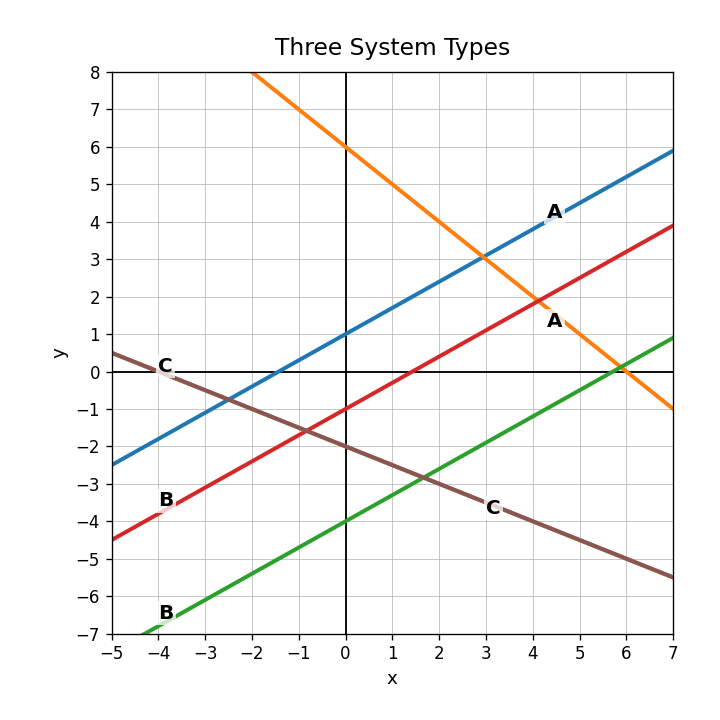
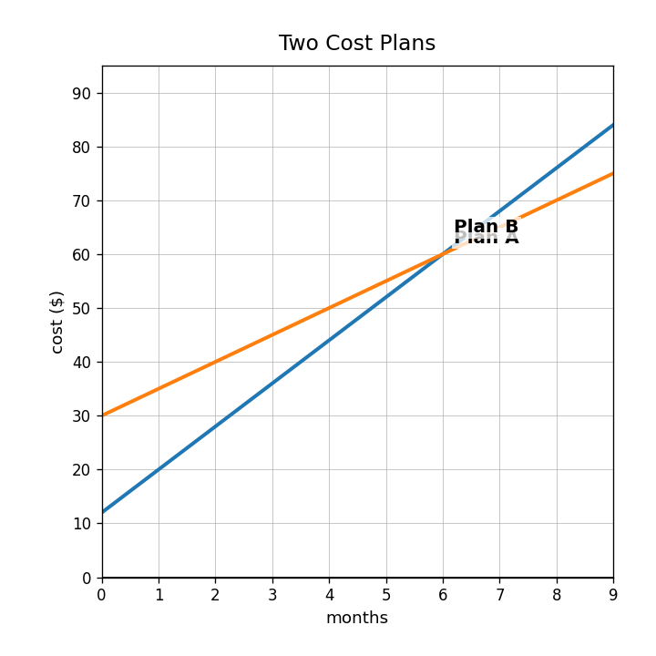
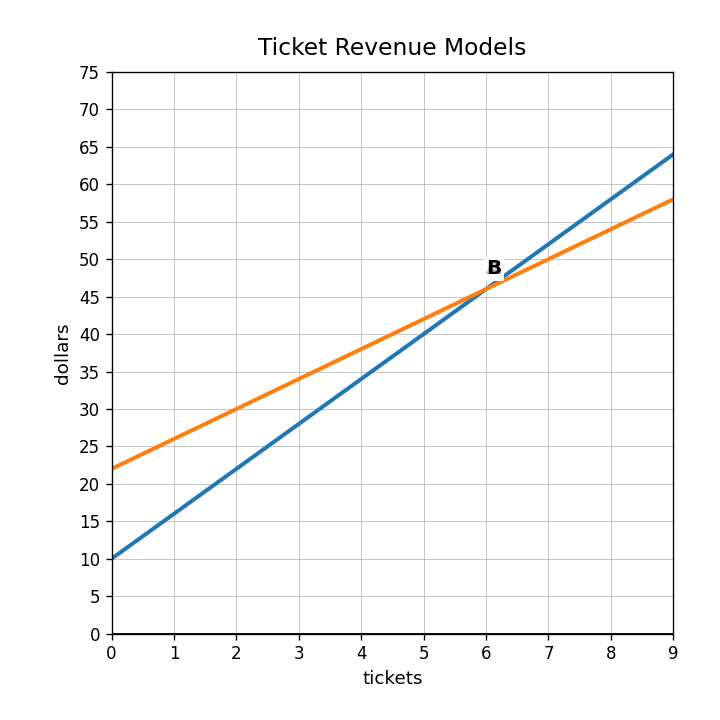

Extra Practice 3.1.4
What solution type is represented when both equations graph as the same line?

Solve using elimination.
$$\begin{aligned}3x+y&=14\x-y&=2\end{aligned}$$
Use the graph to classify each pair of lines as one solution, no solution, or infinitely many solutions. Explain your evidence.

Two plans are shown on the graph. Write a question about when the plans are equal, estimate the answer, and explain what it means in context.

Does the study-time scatterplot show a positive or negative association?

Why might we draw a line of fit on a scatterplot?
Use $T=-3.5m+84$ to estimate $T$ when $m=4$.
In a scatterplot, what does each plotted point represent?
Use the cooling graph to estimate the temperature after 3 minutes and interpret the estimate.

The actual value is 50 and the predicted value is 54. Find the residual and describe the sign.
A student says every scatterplot should use a linear model. Critique the statement.
Describe two things you would check before trusting a line-of-fit prediction.
Which has the greater rate of change: $y=5x+30$ or $y=8x+12$?
Use the ticket model graph and compare Plan A to $D=5t+18$.

In a graph comparing two costs, what does the intersection point mean?
Create two linear cost plans and write a recommendation for when each plan is better.